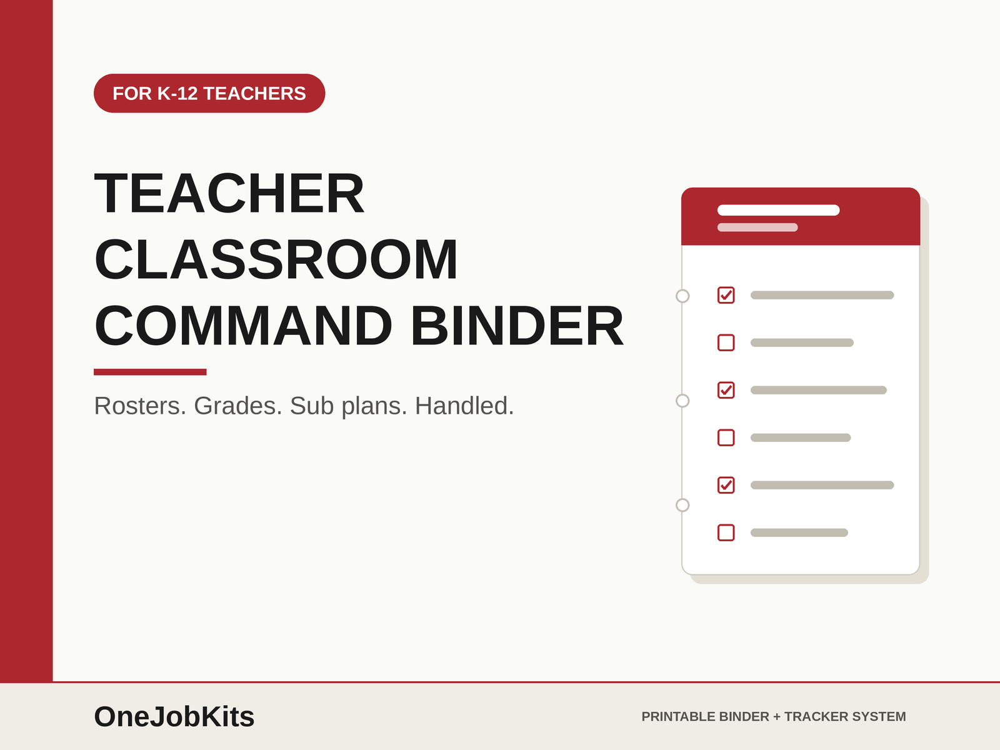

OneJobKits · Kit #19
Teacher Classroom Command Binder — teacher lesson planner printable

A classroom year runs on paperwork nobody sees: the roster, the seating plan, who was absent, who owes work, which guardian you promised a call, what the substitute needs at 7 AM. A teacher lesson planner printable usually covers one slice of that. This kit is the whole paperwork layer as one system.
This page gives you the most urgent slice free: the substitute day plan. Below it is the full system — a printable, fillable binder plus a spreadsheet tracker that mirror each other, built for K-12 teachers who are their own front office. Organisational templates only: your school's systems remain the official record, and the IEP/504 pages organise your notes — they advise on nothing.
Free download — start with the Sub Plan Starter
The Sub Plan Starter is a 3-page fillable PDF (47 fields): a Day at a Glance (header, schedule grid, first-10-minutes and where-things-are boxes), Routines, Seating & Helpers, and Today's Plans & Report Back — four plan blocks plus the half the sub writes back: work covered, factual behaviour notes, messages. Finish it this week; use it the very next absence.
Download the free Sub Plan Starter (PDF)Get it on Gumroad instead
What the starter does not do: it covers one absence day. The full kit below covers the year the absence happens in — planners, lesson overviews, parent contacts, meetings, field trips and close-out, with the tracker keeping every count the binder can't.
What's inside the full kit
- Teacher Binder (fillable PDF, 24 pages, 613 fields) — Cover & Year Setup · Class-at-a-Glance & Daily Schedule · 4× Weekly Planner · 4× Lesson Plan Overview · 4× Parent Communication Log · 2× Meeting Notes · 2× IEP/504 Meeting Notes Organiser (organising pages only) · Substitute Packet — Cover & Day at a Glance, Class Routines, Seating, Helpers & Prompts, including the prompts-only medical-alerts page (points to the nurse and the official alert list; no medical content anywhere) · Field Trip Checklist · Important Contacts & Procedure Prompts · Year-End Reflection & Close-Out
- Classroom Tracker (spreadsheet, 8 tabs; Excel + Google Sheets) — START HERE · Class Roster (counts calculate) · Seating Chart Grid — two dated arrangements, 6 across × 5 deep, so seating history is kept instead of erased · Attendance Overview (accounted total and attendance % calculate) · Gradebook Overview (per-student average % and completed count, plus the class average) · Parent Contact Log (open follow-ups count calculates — the promise you made is a number) · Behavior Notes Log (factual-notes format) · Supply Inventory (REORDER status and quantity-to-minimum calculate)
- Worked example workbook — the tracker filled for a fictional class (Ms. Ellis, Grade 5, Room 204 — 12 fictional students), so every tab's intended use is visible before you type a real name
- Setup Guide (PDF, 6 pages) — the privacy-first rules, week-one setup for tracker and binder, a first-month week-by-week plan, meeting preparation, the 20-minute monthly routine, term rhythm, year-end close-out and printing notes
- Bundle ($39) adds: the complete Period 2 tracker set — all 8 tabs as a second workbook (Excel + Google Sheets) for a second class or period
A filled example — so you can see the finished thing
The kit's worked example fills every tracker tab for a fictional class — Ms. Ellis, Grade 5, Room 204, with 12 fictional students. Nothing about it is real data; what it demonstrates is the working shape:
| From the example workbook | What is filled in |
|---|---|
| Class Roster | All 12 students entered with guardian contacts and plan-on-file flags — the roster counts calculate themselves |
| Seating Chart Grid | Arrangement 1 dated and kept — the example shows the habit the kit teaches: fill Arrangement 2 rather than erasing the first |
| Attendance & Gradebook Overviews | Days and marks entered so the attendance % and the per-student and class averages calculate — the views a teacher actually glances at |
| Parent Contact Log | Contacts logged with follow-ups — the open-follow-up count is the number that stops a promised call from evaporating |
Learn the system on Ms. Ellis's class in an evening; run your own year on it from week one.
Who it is for
K-12 classroom teachers — especially early-career teachers building their first system, and secondary teachers juggling multiple periods — who want the year's paperwork in one place instead of five apps and a drawer.
Who it is not for
Anyone looking for lesson content, curriculum, grading decisions, or a replacement for their school's official gradebook, attendance or student-plan systems. This kit organises; your school's systems remain the record.
Questions buyers ask
- Does this replace my school's gradebook or attendance system?
- No — and it is not trying to. Official records stay official: grades, attendance, IEP/504 plans and medical information live in your school's systems, and where this kit and an official record disagree, the official record is right. This is your personal organiser — the working layer a teacher actually touches all day: who was absent, who owes work, which guardian you promised a call, what the substitute needs at 7 AM — mirrored between a desk binder and a spreadsheet tracker.
- What is in the substitute packet?
- Three binder pages built to be finished in week one, not the night before you're sick: a Cover & Day at a Glance, Class Routines, and Seating, Helpers & Prompts — including a medical-alerts prompt page that points to the nurse and the official alert list. Prompts only: no medical details are ever written in this binder. The free Sub Plan Starter on this page is the standalone 3-page version — day at a glance, routines and seating, and the day's plans with a report-back half the sub completes.
- What do the IEP/504 pages do?
- Organising only. The binder carries a two-page IEP/504 meeting notes organiser — your preparation and your own factual classroom observations, organised before you walk in — and the tracker holds a roster flag and seating prompts. Nothing here interprets, evaluates or advises on any student's plan or needs; the plan itself stays in your school's system, where it belongs.
- I teach two periods — what does the Bundle add?
- A complete second tracker set — all 8 tabs (roster, seating, attendance, gradebook, parent contacts, behavior notes, supplies) labelled Period 2, in Excel and Google Sheets. One workbook per class, so rosters, logs and gradebooks never mix between periods.
- Print it or fill it on screen?
- Both — the binder is a true fillable PDF (AcroForm, 613 fields), so it works typed on a device or printed for the desk; the tracker is a spreadsheet in Excel and Google Sheets formats. The two mirror each other on purpose: the binder is the paper you touch in the room, the tracker is the same record with the arithmetic done — attendance percentages, gradebook averages, open follow-up counts and reorder flags all calculate.
- How is student information handled?
- Privacy-first, and the setup guide's first page is the privacy rules — before the first student name, on purpose. Enter, store, share and dispose of student information only as your school's and district's policies direct. The filled example uses a fictional class (Ms. Ellis, Grade 5, Room 204, 12 fictional students) so you can learn the system without touching real data.
- What does the free starter cover, and what does the full kit add?
- The free Sub Plan Starter is 3 fillable pages (47 fields) — the substitute day, handled: day at a glance, routines & seating, today's plans and the sub's report back. The full kit is the whole classroom year in the same style: the 24-page binder (planners, lesson overviews, parent log, meeting notes, field trips, year-end close-out) plus the 8-tab tracker that keeps the counts honest.
Prices
Base: $29 · Bundle (adds the Period 2 tracker set): $39 — one-time payment, digital download. No subscription; the files are yours.
Can't find the kit you need?
We build it. Ask us — first asker gets it at half the shelf price. Tell us the job at onejobkits.com and we will build the kit for it.
Related kits
Please know: these are organisational templates only — not educational, legal, or medical advice, and not a substitute for your school's official systems, plans, or policies. Official records stay official; IEP/504 content is organising only. Enter and store student information only as your school's and district's policies direct. All example students, guardians and staff are fictional.